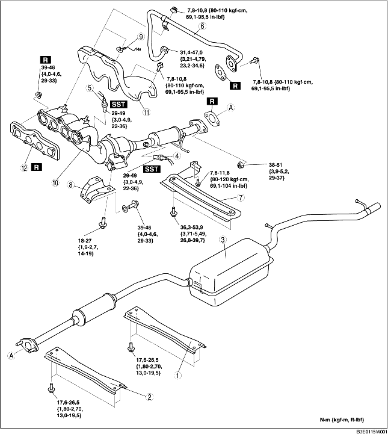

1. Déposer le couvercle de la batterie. (voir la section DEPOSE/REPOSE DE BATTERIE [ZJ, Z6].)
2. Débrancher le câble négatif de la batterie.
3. Déposer le cache inférieur.
4. Déposer les différents éléments selon l'ordre indiqué dans le tableau.
5. Pour la repose, suivre l'ordre inverse de la dépose.

.
|
1
|
Partie arrière de tunnel
|
|
2
|
Partie avant de tunnel
|
|
3
|
Silencieux principal
|
|
4
|
Sonde d'oxygène des gaz d'échappement préchauffée arrière
|
|
5
|
Sonde d'oxygène des gaz d'échappement préchauffée avant
|
|
6
|
Tuyau EGR (côté collecteur d'échappement)
(voir la section Note sur la repose de tuyau EGR.)
|
|
7
|
Partie
|
|
8
|
Support de collecteur d'échappement
|
|
9
|
Attache
|
|
10
|
WU-TWC
(voir la section Note sur la dépose de collecteur d'échappement/isolateur de collecteur d'échappement.)
(voir la section Note sur la repose de collecteur d'échappement.)
|
|
11
|
Isolateur de collecteur d'échappement
|
|
12
|
Joint de collecteur d'échappement
|
1. Déposer les roues et les pneus.
2. Effectuer la procédure suivante pour plus de facilité d'accès.
Spécifications pour l'Europe (conduite à gauche)3. Déposer le tuyau EGR (côté collecteur d'admission). (voir la section DEPOSE/REPOSE DE SYSTEME D'ADMISSION D'AIR [ZJ, Z6].)
4. Déposer le composant de soupape EGR. (voir la section DEPOSE/REPOSE D'ELECTROVANNE EGR [ZJ, Z6].)
5. Débrancher l'arbre de direction du côté boîtier et timonerie de direction. (voir la section DEPOSE/REPOSE DE BOITIER ET DE TIMONERIE DE DIRECTION.)
6. Débrancher le flexible de pression et le flexible de refoulement. (voir la section DEPOSE/REPOSE DE BOITIER ET DE TIMONERIE DE DIRECTION.)
7. Déposer le caoutchouc de fixation de moteur N° 1. (voir la section DEPOSE/REPOSE DE MOTEUR [ZJ, Z6].)
8. Desserrer les boulons de l'isolateur de collecteur d'échappement.
9. Déplacer légèrement l'isolateur de collecteur d'échappement vers un endroit où il ne gêne pas, et desserrer les écrous du collecteur d'échappement.
10. déposer le boulons de fixation du stabilisateur avant et du composant de barre transversale avant. (voir la section DEPOSE/REPOSE DE BARRE TRANSVERSALE AVANT.)
11. Desserrer les boulons du composant de barre transversale avant, et abaisser le composant de barre transversale avant d'approx. 100 mm {3,94 in}. (voir la section DEPOSE/REPOSE DE BARRE TRANSVERSALE AVANT.)
12. Soutenir le tuyau flexible à l'aide d'une enveloppe ou d'une éclisse de soutien, comme indiqué dans l'illustration.
13. Déposer le collecteur d'échappement avec l'isolateur, en l'abaissant vers le bas du véhicule.
1. Serrer les écrous de fixation du collecteur d'échappement selon l'ordre indiqué dans l'illustration.
1. Serrer les boulons et écrous du tuyau EGR selon l'ordre indiqué dans l'illustration.